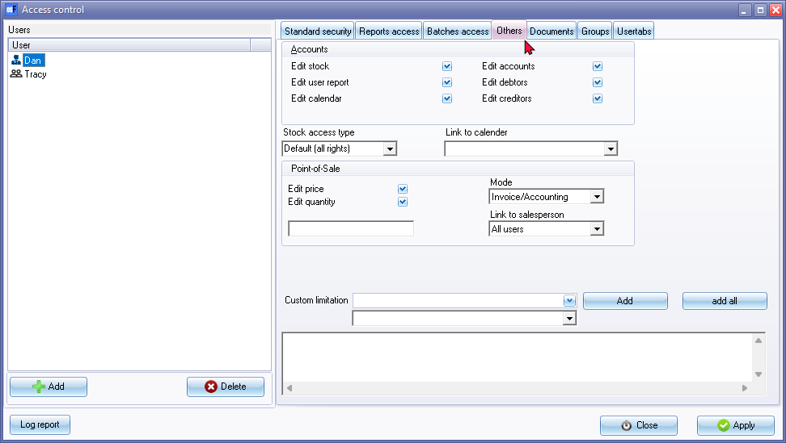
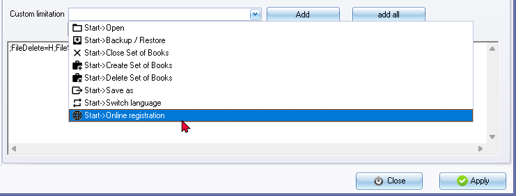
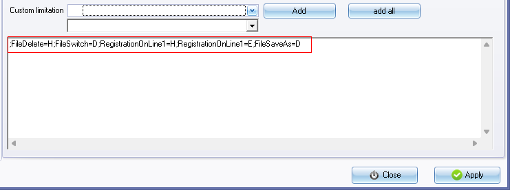
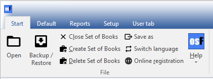
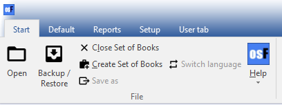

Access control - Others tab
The Others tab in the Access control feature of osFinancials allows you to define access options for specific users in a Set of Books. With this feature, you can control the user's access to create, edit, or delete master files, set point-of-sale settings, and apply custom limitations. Additionally, you can specify the user's mode of operation, such as Invoice/Accounting, Accounting only, or Point-of-Sale only. Furthermore, you can link the user to a salesperson for enhanced security in Point-of-Sale activities.
To set other access options for an user:
- On the Setup ribbon, click on the Setup → Access control menu. Then, navigate to the Others tab.

- Select the desired user: Ensure that the correct user is selected for whom you want to configure access options. If needed, click on the User icon to select the desired user.
- Accounts - Select the following options, if necessary:
- Edit stock - Remove the tick to restrict the selected user from access to create, edit or delete stock items. This will set the Stock items option on the Default ribbon to inactive.
- Edit user report - Not implemented.
- Edit calendar - Not implemented.
- Edit accounts - Remove the tick to restrict the selected user from access to create, edit or delete general ledger accounts (general ledger / bank and tax accounts). This will set the Setup → Accounts menu option on the Setup ribbon to inactive.
- Edit debtors - Remove the tick to restrict the selected user from access to create, edit or delete debtor (customer / client) accounts. This will set the Debtors option on the Default ribbon to inactive.
- Edit creditors - Remove the tick to restrict the selected user from access to create, edit or delete creditor (supplier) accounts. This will set the Creditors option on the Default ribbon to inactive.
- Stock access type - By default, the access type is set to 'All rights,' which grants full access to stock items. However, you also have the option to select the 'Warehouse (barcode/weight dish)' access type. This option is useful when you want to restrict stock access to specific areas such as warehouses or when utilising barcode or weight dish functionality.
- Link to calendar - Default is User or osFinancials5 (as in the resources table).
|
|
Multi-User calendar (agenda) - Manual - Shop - Licence : Once-off - This plugin adds the multi-user agenda (multiple agendas) to the Calendar (Planner). You can add agendas and link them as default to the current user. For every agenda a tab will appear in the agenda Calendar so you can see what the appointments, etc. are on other agendas. You can have a agenda for each employee, salesperson, user, etc. and create invoices directly from his / her agenda with a simple click. Each agenda has it's own calendar and task list. |

- Point-of-Sale - Select the following options for the user if necessary:
- Mode: This determines the functions available to the user. Select the desired mode for the user:
- Invoice / Accounting: Allow all functions to the user.
- Accounting: Will only allow Accounting functions to the user.
- Point-of-Sale: Will allow only Point-of-Sale invoicing functions to the user.
- Edit price: Remove the tick to restrict the user from editing or changing the selling prices of stock items in Point-of-Sale invoicing.
- Edit quantity: Remove the tick to restrict the user from editing or changing the quantities of stock items in Point-of-Sale invoicing.
- Link to salesperson: Select the salesperson from the drop-down list for the user. This allows access only to the selected user for Point-of-Sale invoicing.
- Custom limitation - All the available menu options are listed for each user. This feature allows you to set custom access levels for specific options. You can select menu options from a list and choose to hide, show, enable, or disable them for the user. A script will be automatically generated for each custom limitation added. This custom limitation settings will only be reflected on the menu items and options when the selected user logs in on the Set of Books.
- Applying changes: Click on the Apply button to save the changes for the selected user.
- Setting access levels for other users: If necessary, select the next available user and configure their access options in the same manner.
- Finalizing changes: Once you have finished setting the access levels for all desired users, click on the Close button to exit the "Access control" screen.
Custom limitations
To set the custom limitation for an user:
- Click on the list to select a feature or menu.

- Select "Hide, Show, Enable" or "Disable" from the list.
- Click on the Add button. The script for the selected custom limitation will be displayed in the text area.

Each selected or added custom limitation is preceded by a semi-colon ; In this example, File indicates that it is an item on the File (Start), and Delete is the Delete (Set of Books) item on the Start ribbon. The option to hide, show, enable or disable the selected menu option, is indicated as follows:
- =H - the menu item will not be displayed.
- =S - the menu item will be displayed.
- =E - the menu item is enabled.
- =D - the menu item is disabled and will be displayed as an inactive menu item.
All functions (options) on the Start ribbon, is as follows:

In this example, the custom options on the Start ribbon, is as follows:

- Online registration and Delete Set of Books is hidden.
- Switch language and Save as options is disabled.
- Click on the Apply button to save the selection or changes.